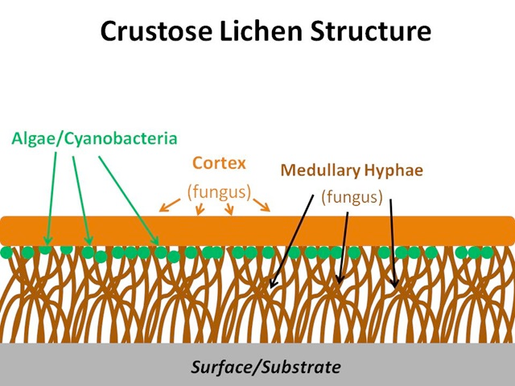
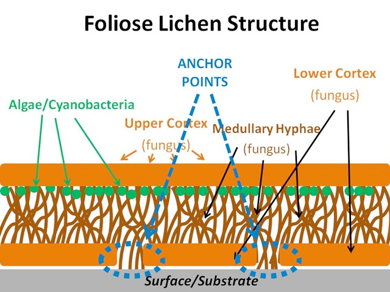
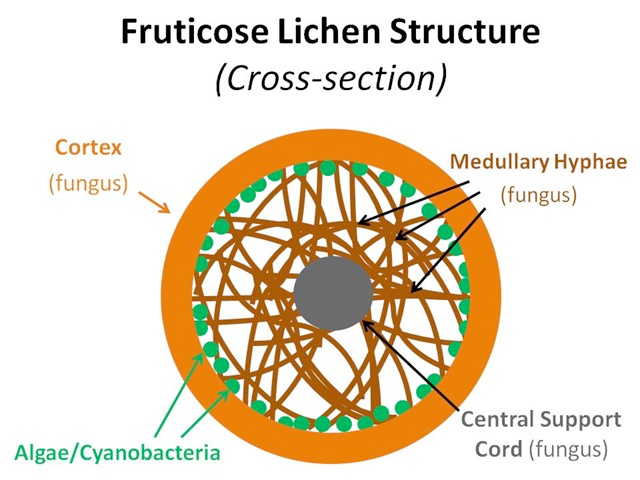

5 Epiphytes of aspen
Aspen is naturally colonised by two classes of epiphytes, lichens and bryophytes, of which lichens are by far the most speciose. These two classes are described below.
5.1 Lichen epiphytes
Lichens are composite organisms comprising a fungal body and either a green alga or cyanobacterium as the photosynthetic component. The symbiosis brings about some unique physiological and morphological characteristics. Lacking a complex root system, waxy cuticle and stomata, lichens absorb nutrients through deposition from the atmosphere or from its substrate (Williams et al. 1996; Gilbert, 2000). Three main growth forms exist: crustose, foliose and fruticose (Figure 5.1). Crustose lichens are made up of layers of cortex (fungus), algae/cyanobacteria (beneath the surface of the cortex) and medullary hyphae (fungus), which attach to the substrate; foliose lichens are made up of upper and lower layers of cortex (fungus), algae/cyanobacteria (beneath the surface of the upper cortex) and medullary hyphae (fungus), which may attach to the substrate; fruticose lichens are made up of a central core that attaches to the substrate, around which grows a lower medullary hyphae layer (fungus), a layer of algae or cyanobacteria, and an outer cortex (fungus).






5.2 Moss and liverwort epiphytes
Mosses possess distinct stems and spirally arranged leaf scales, similar to vascular plants. In the stems are three distinct layers: epidermis (outer layer), cortex (middle layer), and the central cylinder. The epidermis tends to be mostly one cell thick, but can have more layers. Young cortical cells and the leaves contain chlorophyll, but this diminishes with age. Mosses attach to their substrate via rhizoids – multicellular filaments growing from the base of the stem. Mosses are generally desiccation-tolerant, being able to survive for long periods of time without water, but rapidly rejuvenating when moisture is present (Scott and Brooks 1943).
Liverworts consist of parenchyma cells with chlorophyll granules occurring in the superficial cells. A unique feature of liverworts is the presence of terpenoids contained within single membrane-bound bodies. There is a distinct upper and lower surface to the thallus, with the lower surface containing numerous unicellular rhizoids. The epidermis contains a thin cuticle, some of which are thickened with cellulose. Branching tends to be dichotomous, giving rise to the characteristic bilateral branching seen in many liverworts. Unlike mosses, liverworts are more sensitive to desiccation, though some species, such as Frullania, contain a small sac that retains water and enables them to survive in drier conditions (Scott and Brooks 1943).
5.3 Factors influencing epiphyte distribution and abundance
Distribution and abundance of epiphytes on trees differs with aspect, age of stand, phorophyte1 2 chemical processes, and phorophyte structure (Gustafsson and Eriksson 1995; Hemming and Lindroth 1999; Hedenås, Blomberg, and Ericson 2007; Koopmann 2005; Mistry and Berardi 2005). Epiphyte community diversity on Populus spp. is demonstrably higher than other boreal tree species and its presence in woodlands can positively influence species richness (Uliczka and Angelstam 1999; Goward and Arsenault 2000; Boudreault et al. 2008; Hedenås and Ericson 2000; Juriado, Paal, and Liira 2003; Lõhmus, Rosenvald, and Lõhmus 2006). Cyanolichens (lichens with a cyanobacterium as the primary photosynthetic component) grow more abundantly in young- to middle-aged conifer (Picea and Pseudotsuga) stands when Populus is also present, particularly on trees neighbouring Populus (Goward and Arsenault 2000). Only those trees growing within the drip zone display these differences, which implies an effect of Populus on neighbouring tree species.
At broader spatial scales, air quality is one of the most significant factors influencing epiphyte diversity and its effects are well documented (Gilbert 2000). Lichens especially are useful as bioindicators of pollution, with sensitive species often decreasing in abundance in areas where nitrogen and sulphur dioxide in particular are at high levels (Hawksworth and Rose 1970; Ferry, Hawksworth, and Baddeley 1973; Hedenås and Ericson 2000; Hauck et al. 2003; van Herk, Mathijssen-Spiekman, and de Zwart 2003; Werth et al. 2006; Mikhailova 2007).
When investigating the combined effects of climate change, pollution and woodland quality on epiphyte species composition and richness across 324 sites in Scotland, Ellis and Coppins (2010) found a weaker effect of pollution (i.e., sulphur dioxide, acid deposition, nitrogen deposition, ammonia, nitrogen oxides, and ozone), potentially explaining 3.5-3.7% of the measured composition and richness; with climate accounting for 6.7-8.4%. Thus, pollution may not be a particularly dominant force in influencing composition and richness due to the relatively clean air in northern Scotland, away from urban centres (Gilbert 2000). In a comprehensive study on the effects of climate and autogenic succession in epiphyte communities on Populus tremula populations in Scotland, Ellis and Coppins (2006) demonstrated a significant climatic effect. Rainfall was found to be very important, which in Scotland follows a gradient from the wet, oceanic Atlantic west coast to the drier northeast. However, average tree age at each site was also important, with older trees from drier sites having similar community structure to younger trees at wetter sites. Ultimately, older trees and those in wetter areas tended to have a greater frequency of bryophytes and cyanobacterial lichens, with younger trees and those in drier climates having a greater frequency of crustose and green-algal lichens. Sexual crustose lichens tended to be the earliest colonizers of aspen trunks, gradually being overgrown by larger foliose and fruticose species, along with mosses and liverworts (Ellis, C in Parrott and MacKenzie 2009).
More locally, epiphytic mosses and lichens exhibit differences in their preference for light, with certain species possessing the ability to acclimatise rapidly to extreme variations whilst others may fail to thrive (Kershaw and Macfarlane 1980; Kershaw 1985). Light quality can also affect lichen diversity on different types of tree bark (Loppi and Frati 2004). The most significant factor determining diversity was the quantity of winter light, which is higher on Tilia platyphyllos when compared with Quercus ilex; the former being deciduous and the latter being evergreen. Cyanolichens, mosses and liverworts show greater vitality on the northern side of tree trunks in clear-cut systems where a few trees are retained in groups to conserve diversity (Hazell and Gustafsson 1999; Hedenås, Blomberg, and Ericson 2007).
Epiphytes can be used as food, nesting materials, or camouflage by a range of animals and invertebrates, which may relate to their prevalence during winter when many other food sources are unavailable (Sharnoff and Rosentreter 1998; Allgaier 2007). Herbivores can damage lichens and mosses, the amount of damage varying among thallus structures and growth forms, the presence or absence of secondary metabolites, and variation in herbivore preferences (Kumpula 2001; den Herder, Kytöviita, and Niemelä 2003; Gauslaa et al. 2006; Nimis and Skert 2006; Asplund and Gauslaa 2007); damage to lichen thalli can be caused by slugs via specialised radulae, and the production of saliva and mucus (Fröberg, Baur, and Baur 2006).
Living substrate upon which the epiphyte grows, such as plant tissue↩︎